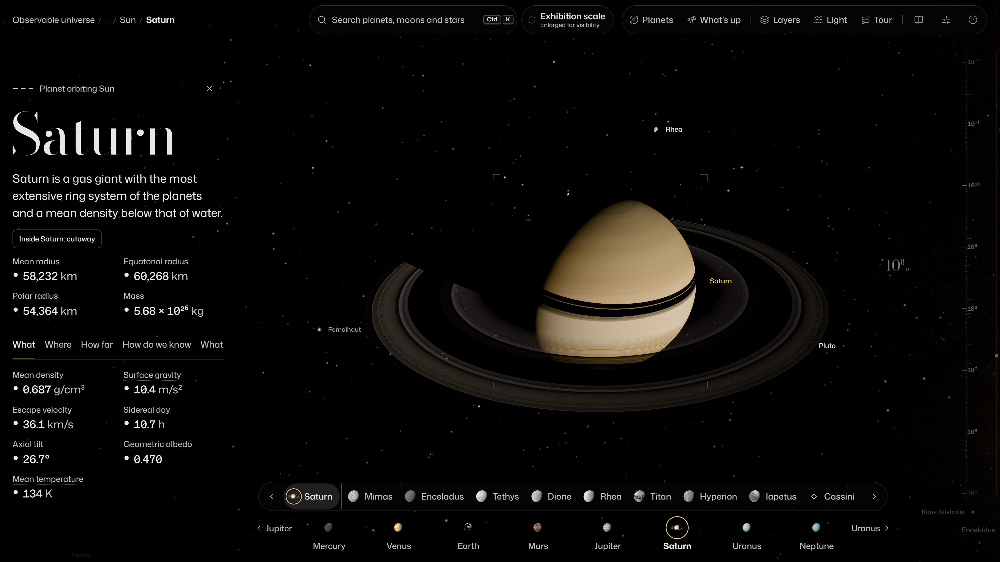
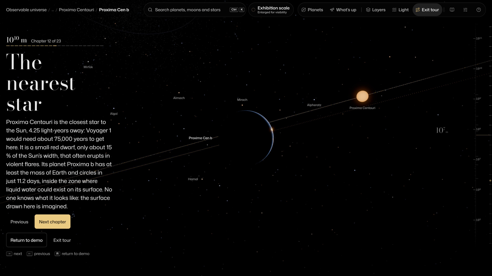

Cosmos starts at Earth. Drag to turn, scroll to travel, click anything to find out what it is. You cannot break it: press H to come home.


Press T and Cosmos flies you from Earth past the planets, the nearest stars and the black hole at the centre of the Milky Way to the oldest light in the universe, with a short story at every stop. About nine minutes.
Press / and type ISS. It is where it really is right now, with about 31,800 satellites and pieces of debris around it.
Keys 1 to 8 fly to Mercury through Neptune, 9 to Pluto. [ and ] step through the moons.
Click "Exhibition scale" at the top. In true scale the planets shrink to specks: space is mostly empty.
Open "Inside" on a planet's fact sheet for its layers, measured by quakes, gravity and spacecraft.
Open Light and switch the sky to radio, infrared, X-rays, gamma rays or the cosmic microwave background.
Press . to run time faster, up to 10 million times; Space pauses and N jumps back to now.
29,408 tracked objects crowd low orbit. Pick a launch policy and watch the next 100 years.
Replay NASA's DART impact, then try to steer an asteroid away from Earth.
Could a planet keep liquid water? Change its star and orbit, or explore 6,451 exoplanets.
Drop a clock towards Sagittarius A* and watch time slow down.
Credits. Built for SCI-FORGE 2026. Data shared openly by NASA, JPL, ESA (Gaia, Planck), CelesTrak, USGS Astrogeology, NOAA, the IAU, CDS, the 2MASS Redshift Survey, DESI and many survey teams; every dataset, licence and citation is listed in the app's Sources panel. Built with three.js, astronomy-engine and satellite.js. Type: Bodoni Moda, Mona Sans, JetBrains Mono (SIL Open Font License).